Ogni sito si può esplorare davvero. Nessuno ti porta più per mano: i siti vanno cercati, i percorsi vanno trovati.
AggiuntoSiti navigabili: ogni menu, scheda e link porta a una pagina vera.
AggiuntoLivelli 3, 7 e 8 rifatti: più passaggi, conferme via email e telefono, moduli da firmare.
AggiuntoLivello finale in 3D più lungo e più difficile.
Aggiunto«Sospendi il computer» nel menu, per arrendersi.
AggiuntoVersione «V 1.1.4» nell’intro.
RimossoApp Note: resta solo l’agenda.
RimossoGli euro spesi nella barra in alto: si vedono nel Radar.
RimossoI pulsanti da rincorrere nei livelli 6, 7 e 8.
SistematoChirpy si apre sul feed, non più sul profilo.
SistematoDock più piccola e finestre che non la coprono più.
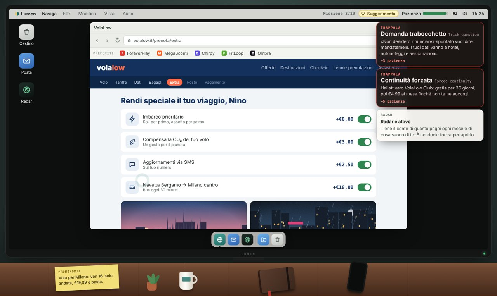
Siti più veri, trappole più sottili.
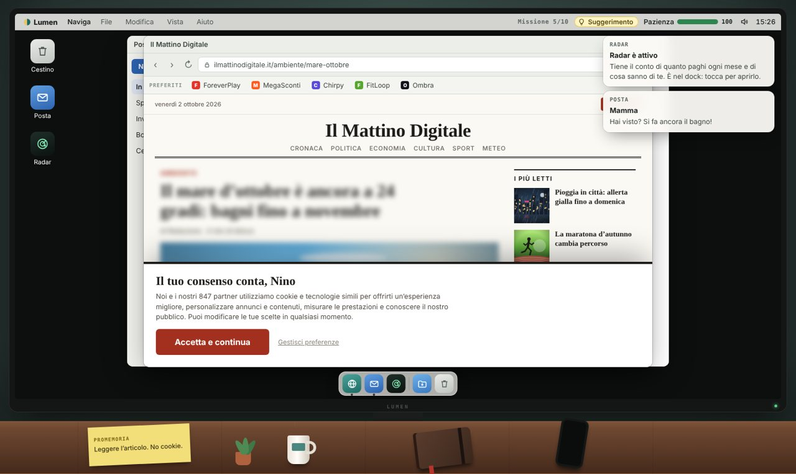
Missioni riscritte da capo.
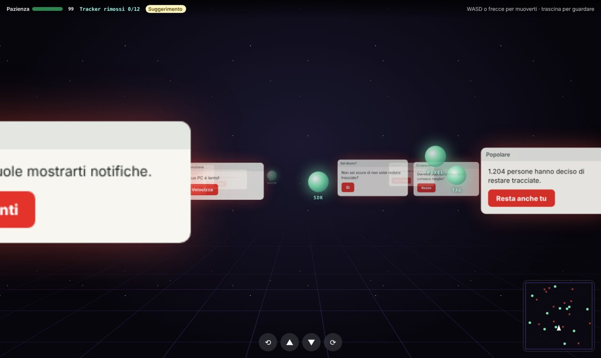
Il livello finale, più duro.
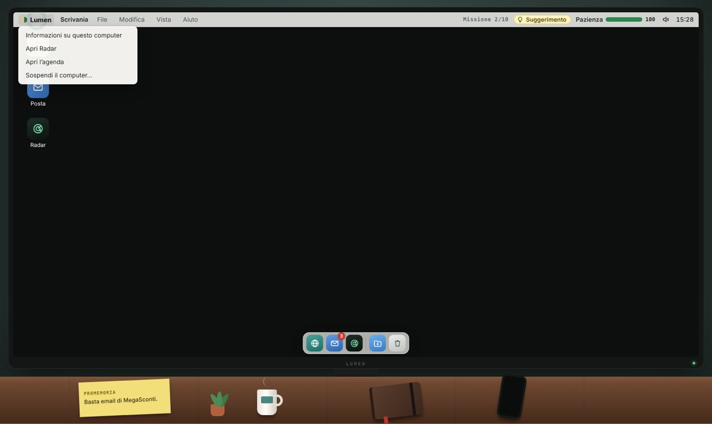
Il menu per sospendere il computer.
0.32/10/26
Radar, agenda e una sola pazienza
Arriva un’app che mostra quanto costa davvero internet. Le spiegazioni passano su un’agenda a matita e la pazienza diventa una sola, per tutta la partita.
AggiuntoRadar: abbonamenti ricorrenti e dati tracciati, fin dall’inizio.
AggiuntoAgenda a matita con la data di oggi: spiega il gioco e ogni livello.
AggiuntoPazienza da 100 che non si ricarica: cala col tempo e a ogni errore.
AggiuntoSchermata «Ci penso domani» quando la pazienza finisce.
AggiuntoCartella Download nel dock e una finta ricerca, «cerco.».
RimossoLo scontrino di ogni missione: i soldi persi si vedono nel riepilogo.
RimossoIl timer dei livelli: il tempo resta solo come dato finale.
SistematoUn’email vecchia poteva completare la missione sbagliata.
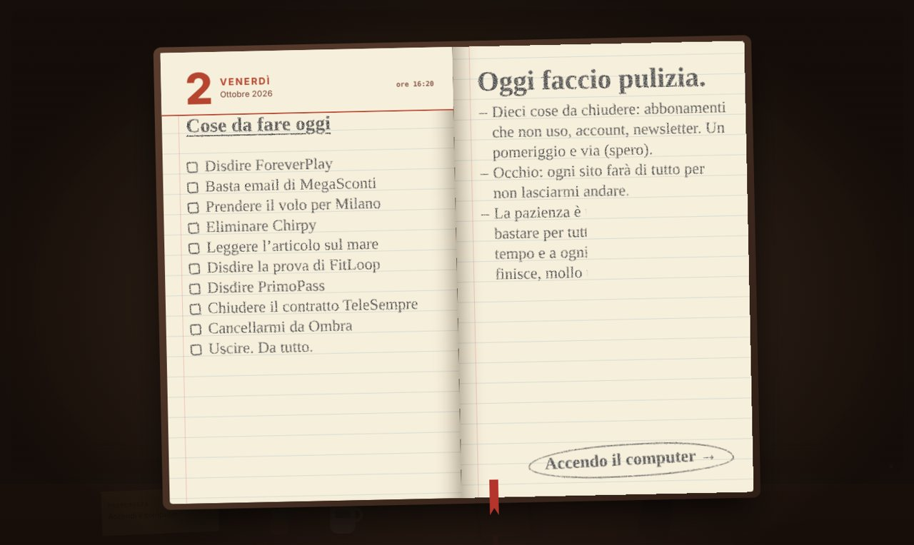
Cose da fare oggi, a matita.
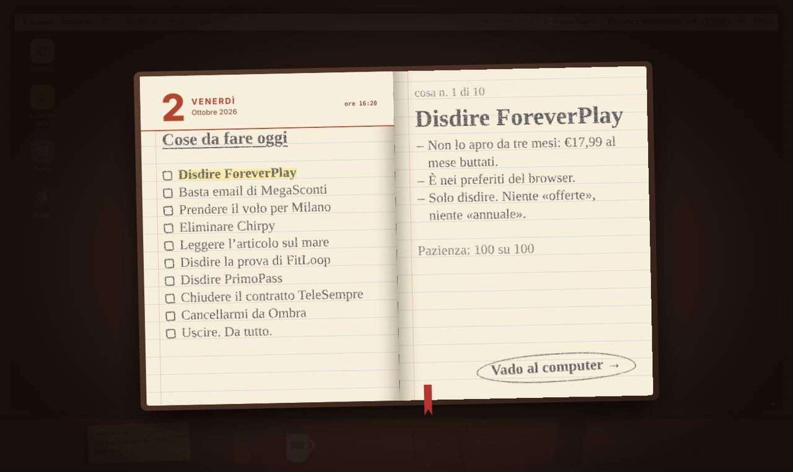
Ogni livello si spiega dall’agenda.
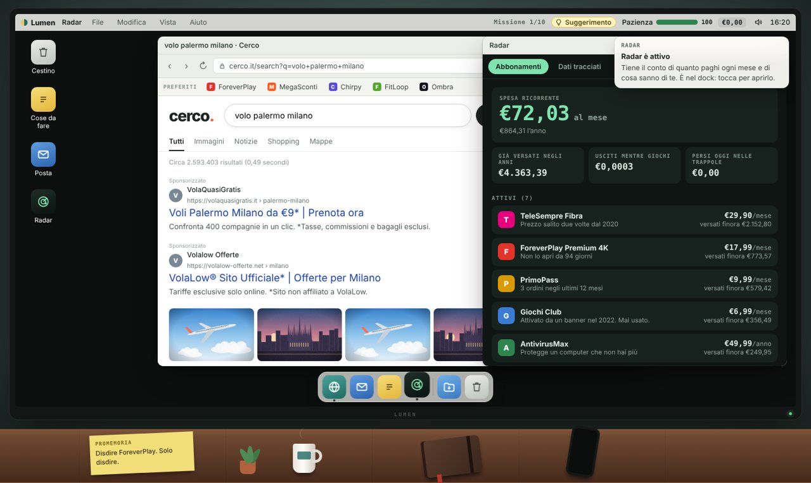
Il Radar: abbonamenti e dati tracciati.
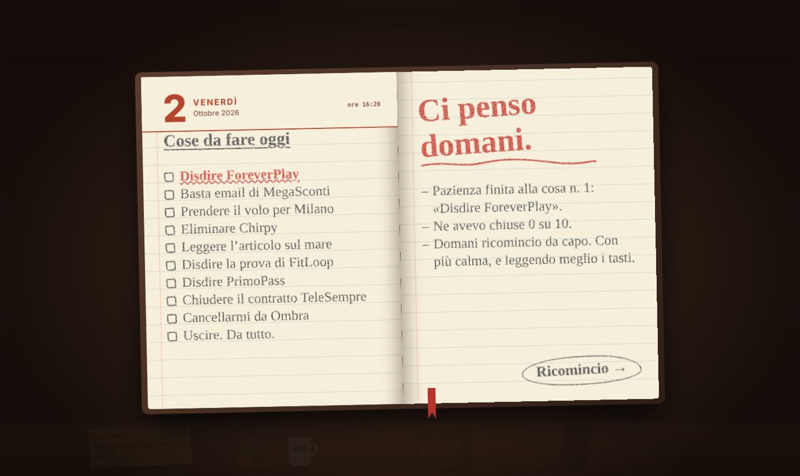
«Ci penso domani.»
0.21/10/26
Arriva l’intro
Il gioco ora si apre con un’entrata in scena: all’inizio sembra tutto normale.
AggiuntoIntro animata: una finestra qualunque, popup a raffica e poi il titolo «Are You Sure?».
AggiuntoSuoni ed effetti per accompagnare l’intro.
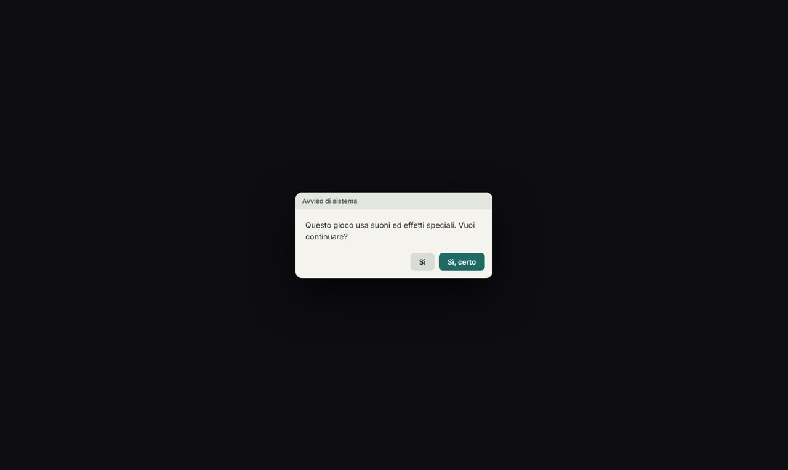
Una finestra qualunque.
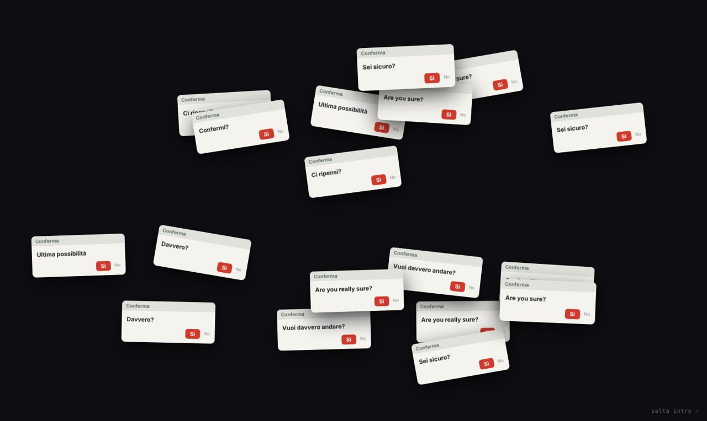
Poi i popup.
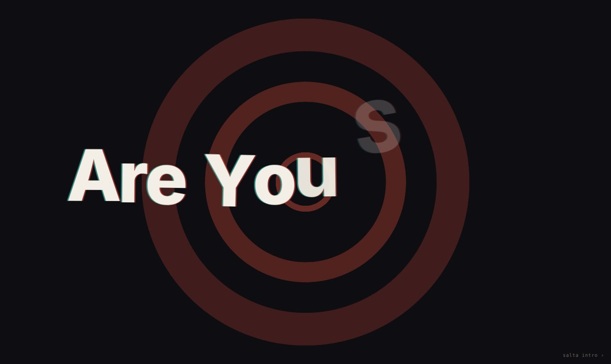
Il titolo prende forma.
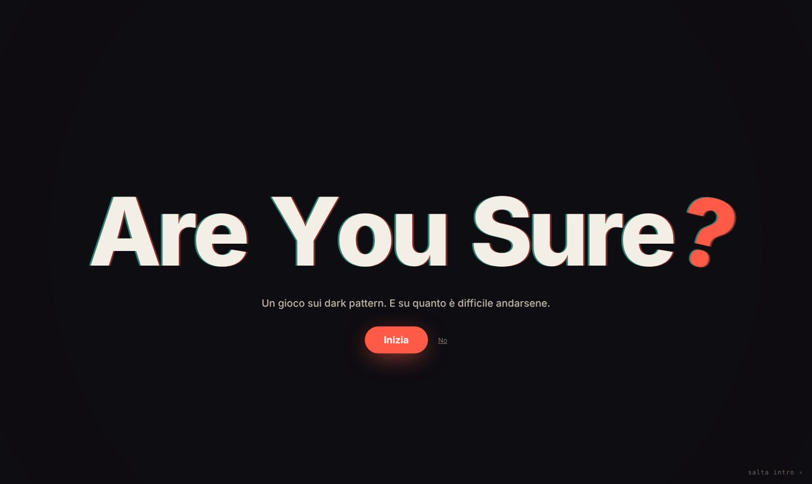
«Are You Sure?» e il tasto per iniziare.
0.11/10/26
La prima uscita
Un finto computer, dieci cose da disdire e un solo nemico: l’interfaccia.
AggiuntoComputer finto con browser, posta, cestino e telefono sulla scrivania.
AggiuntoDieci missioni sempre più difficili, fino a un livello in 3D.
AggiuntoPazienza e scontrino per ogni missione, timer e suggerimento.
AggiuntoNome del giocatore, effetti sonori e visivi.